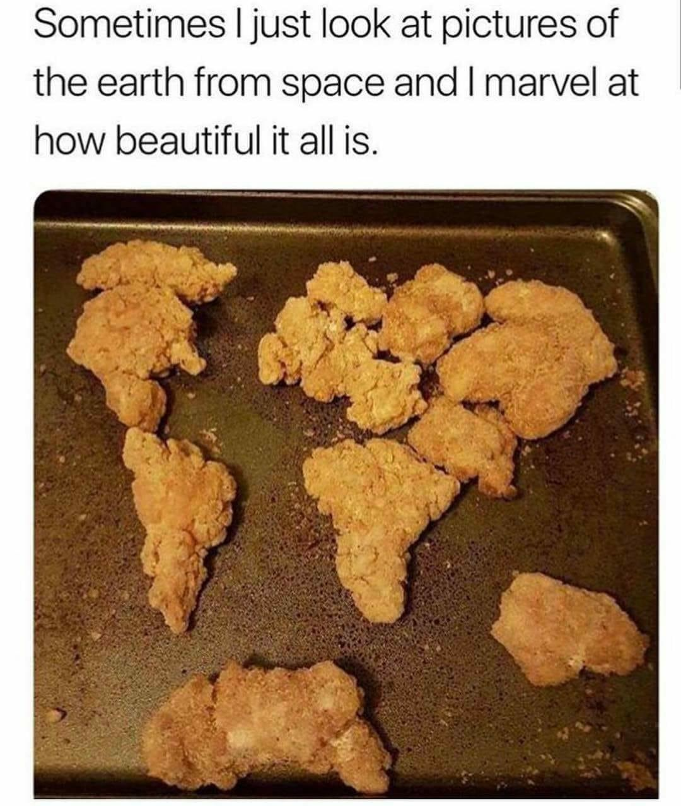

Overview
GroundingGPT is an end-to-end multimodal grounding model that accurately comprehends inputs and possesses robust grounding capabilities across multi modalities,including images, audios, and videos. To address the issue of limited data, we construct a diverse and high-quality multimodal training dataset. This dataset encompasses a rich collection of multimodal data enriched with spatial and temporal information, thereby serving as a valuable resource to foster further advancements in this field. Extensive experimental evaluations validate the effectiveness of the GroundingGPT model in understanding and grounding tasks across various modalities.

Multi-modal Understanding:
| Instructions | Inputs | outputs | What are the things I should be cautious about when I visit here? | When visiting this picturesque location with a wooden dock overlooking a calm lake, there are a few things to be cautious about. First, the wooden dock may be slippery, especially if it is wet or covered in algae, so it is essential to be careful while walking on it. Second, the lake's calmness may give a false sense of security, so it is crucial to be aware of the water depth and any potential hazards, such as submerged rocks or sudden changes in water currents. Lastly, be mindful of the surroundings, as there may be other visitors or wildlife in the area, and respect their space to ensure a safe and enjoyable experience for everyone. |
|---|---|---|
| Can you explain this meme in detail? |  | The meme features a close-up of a piece of fried chicken, which has been cut into the shape of a map. The chicken is placed on a tray, and the map is made up of various pieces of chicken, showcasing different countries and continents. The chicken is spread across the tray, with some pieces placed in the center and others surrounding it. The meme is a creative and playful representation of the world, using a popular food item to create a unique and amusing visual. |
| Write a concise summary of the video clip. | In this captivating video, a drone takes us on a mesmerizing journey over the city of Florence, Italy. The aerial footage showcases the breathtaking beauty of the city, with its iconic landmarks and stunning architecture. As the drone soars through the sky, we are treated to a bird's-eye view of the city's famous bridges, including the Ponte Vecchio and the Ponte Santa Trinita. | |
| Describe this video please. | In this video, a young woman is seen sitting on a hay bale in a field. She is wearing a black shirt and there is a backpack next to her. She is reading a book and seems to be enjoying her time in the field, possibly taking a break from her daily routine. The hay bale provides a comfortable seating area for her, allowing her to relax and appreciate the surroundings. The field is filled with tall grass, creating a serene and peaceful atmosphere. Overall, the video captures a simple yet beautiful moment of a young woman finding solace in the peacefulness of a field. | |
| Provide a clear and focused description of the audio's content. | This audio captures the sound of rain falling steadily, creating a soothing ambiance. The raindrops can be heard hitting the ground, possibly a roof, and splashing into a puddle. The consistent and gentle nature of the rainfall creates a peaceful and calming atmosphere. | |
| Describe the main elements and features of the audio. | This audio captures the distinct sound of a saw being used to cut through a piece of wood. The saw is being operated at a steady pace, creating a rhythmic pattern of cutting and sawing. The sound of the saw in action is prominent, indicating the woodworking process in progress. |
Multi-modal Grounding:
| Instructions | Inputs | outputs | results | Please describe the image and include the object positions. | Three dogs are sitting on the floor in front of three plates of food. They seem to be begging for food, possibly from their owners. | Please describe the image and include the object positions in [x0, y0, x1, y1] format. | In the image, two soccer players are seen on a soccer field. One player is wearing a black and white uniform, while the other is wearing a red and white uniform. They are both chasing after a yellow ball. |
|---|---|---|---|
| Please give me the timestamp when the dog turn around to look at the camera? When does the dog use its paws to push off and ride the skateboard? |
The dog turns around to look at the camera in {0.09,0.15} The dog uses its paws to push off and ride the skateboard in {0.42,0.58}. |
—— | |
| When did the baby push up the glasses and stretch her body in the video? When does the girl turn over the book? |
The baby push up the glasses and stretch her body in {0.16, 0.36}. The girl turns over the book in {0.39,0.45}. |
—— | |
| Where is the sound's point of emission in this image? Include the object positions in [x0, y0, x1, y1] format. | In the image, a dog is running through a grassy field. The dog is running with its mouth open, creating a sound of running and barking. The scene is set in a park or a field, with trees in the background. |